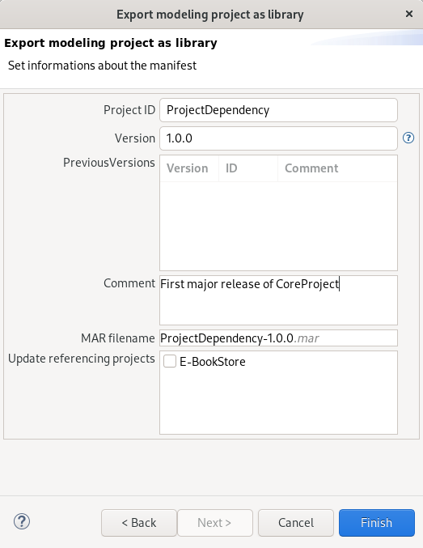

Copyright © 2008, 2022 Obeo - All rights reserved. This program and the accompanying materials are made available under the terms of the Eclipse Public License v1.0
Authors Stéphane Thibaudeau
Contact stephane.thibaudeau@obeo.fr
Since IS Designer 1.8.
Allows to export a modeling project as a library file and import it into other modeling projects.
When a library is exported, the user chooses a version number. This version number is checked when importing the library into another modeling project. References to elements contained in the library are updated automatically.
This is useful to reuse modeling libraries among different projects, keeping track of the versions.
The library files have the .mar extension (standing for Modeling ARchive).
To export a modeling project as a library, use the File > Export… menu and choose Export modeling project as library in IS Designer category.
The wizard’s first page allows to define the following information:
The second page allows to define the following information:

When the wizard is completed, a MAR file is generated at the specified location. This file can then be imported into another modeling project.
To import a library file into a modeling project, use the File > Import… menu and choose Import library into modeling project in IS Designer category.

The wizard allows to define :

Once the MAR file has been selected, the following information are extracted from the file and displayed:
The dependencies are displayed with a green or red tick indicating if the dependency is valid or not regarding the target project.
If all dependencies are valid, the user can finish the wizard. The file is then imported into a libraries folder in the target project.
A folder with the name and ID of the imported project is created. All semantic and graphical data are copied into this folder.

When importing a MAR file the dependencies table shows:
Here is an illustrative example :

A libraries folder has been created and a folder for Core project V1.0.0 has been created too.


A libraries folder has been created and a folder for Project 1 V1.0.0 has been created too.
Inside the Project 1-1.0.0 we can see a libraries folder for the previously imported Core project.